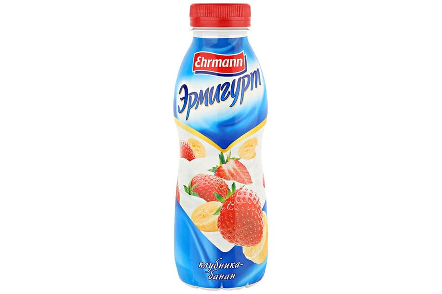

<!--#set var="title" value="Термоусадочная этикетка • НекстПринт" -->
<!--#include virtual="/parts/header.html" -->
<section class="brand">
    <div class="container">
        <div class="title title_shrink"><h3>Термоусадочная этикетка</h3></div>
        <div class="swiper-container mySwiper">
            <div class="swiper-wrapper">
              <div class="swiper-slide">
                <a data-fancybox="gallery" data-src="images/dist/shrink-label-1.jpg">
                    
                </a>
              </div>
              <div class="swiper-slide">
                <a data-fancybox="gallery" data-src="images/dist/shrink-label-2.jpg">
                    
                </a>
              </div>
              <div class="swiper-slide">
                <a data-fancybox="gallery" data-src="images/dist/shrink-label-3.jpg">
                    
                </a>
              </div>
              <div class="swiper-slide">
                <a data-fancybox="gallery" data-src="images/dist/shrink-label-4.jpg">
                    
                </a>
              </div>
              <div class="swiper-slide">
                <a data-fancybox="gallery" data-src="images/dist/shrink-label-5.jpg">
                    
                </a>
              </div>
              <div class="swiper-slide">
                <a data-fancybox="gallery" data-src="images/dist/shrink-label-6.jpg">
                    
                </a>
              </div>
            </div>
            <div class="swiper-pagination"></div>
            <div class="swiper-button-prev"></div>
              <div class="swiper-button-next"></div>
        </div>
        <p>
            Термоусадочная этикетка это важная часть готовой продукции и является основным двигателем продажи товара. В настоящее время повысились требования к функциональности этикеток, законы рынка заставляют отечественного производителя переходить на качественно новый уровень упаковки. Термоусадочная этикетка это единственно возможный способ этикетирования изделий со сложной геометрией поверхности, предоставляющей огромные возможности для фантазии дизайнера. Термоусадочная этикетка успешно используется для молочных продуктов, соков, различных напитков, соусов, консервной продукции, детского питания, косметики, бытовой химии и др. Для данного вида этикетки почти нет ограничений в выборе материала тары: полиэтилен, полипропилен, вспененный полистирол,стекло, жесть и др.
        </p>
        <p>
            <strong>Термоусадочные этикетки дают Вам ряд преимуществ:</strong>
        </p>
        <ul>
            <li><i class="fa fa-check"></i><h5>Защита – термоусадочные рукава могут использоваться как гарантия невскрытия продукта;</h5></li>
            <li><i class="fa fa-check"></i><h5>Гибкость – идеальны для продуктов специальных форм, на которые нелегко наклеить этикетку;
            </h5></li>
            <li><i class="fa fa-check"></i><h5>Низкая стоимость – термоусадочные рукава эффективны по своей стоимости;</h5></li>
            <li><i class="fa fa-check"></i><h5>Продвижение продаж – идеальны для специальных акций таких, как: “Купите один, получите второй бесплатно”, или “Купите один, получите второй за пол цены”;</h5></li>
            <li><i class="fa fa-check"></i><h5>Гигиена – термоусадочные рукава повышают гигиеническую защиту и свежесть продукта;</h5></li>
            <li><i class="fa fa-check"></i><h5>Скрытие дефектов поверхности тары – укрытие литографии, устаревших дизайнов.</h5></li>
        </ul>
        <p id="shrink-text">
            Термоусадочная этикетка изготавливается из термоусадочной одноосноориентированной плёнки ПВХ, толщиной 35-70 мкм. Печать наносится на внутреннею поверхность рулона плёнки, что позволяет сохранить качество нанесенного дизайна в течение всегопериода использования продукта. Для печати используется самое современное оборудование.
        </p>
    </div> 
</section>
<!--#include virtual="/parts/consultation.html" -->
<!--#include virtual="/parts/footer.html" -->